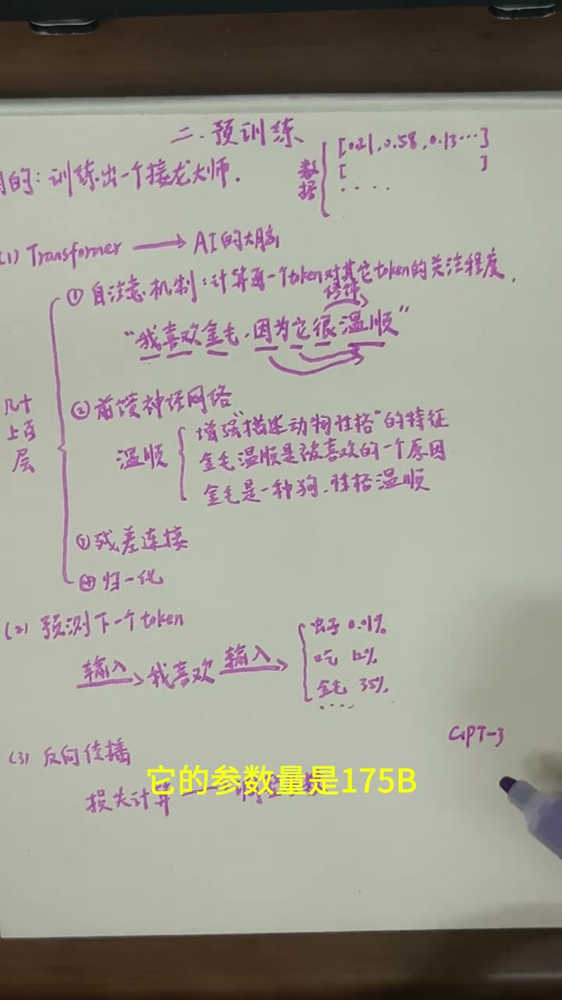

回顾：数据准备的产物
00:00上期讲了数据准备：收集清洗 → 分词Token化 → 嵌入随机高维向量。关键前提：这些向量里的数字都是随机生成的，它们现在还没有真正的语言含义。那么原本随机生成的数字，是怎么逐渐学会表达文字含义的呢？这就是预训练要解决的问题。

Transformer：AI的大脑 — 自注意力 + 前馈神经网络
00:40上一步我们得到了处理后的数据（高维向量）。把这些向量放进Transformer中处理。Transformer是大语言模型最核心的网络结构，可以暂时理解为AI的大脑。
01:13Transformer的核心是自注意力机制。它可以让每个Token计算出对其它Token的"关注程度"。
以"我喜欢金毛，因为它很温顺"为例：当这句话经过自注意力机制处理后，温顺这个词的向量就发生了变化——它知道了"很"在修饰它，温顺是描述金毛的，温顺是表达原因……它与其他Token之间发生了关注程度的计算。

02:18接着向量还要经过前馈神经网络，对每个Token得到的信息进行进一步加工。还是"温顺"这个词——它知道了温顺通常是形容动物的，会增强"描述动物性格"的特征，甚至推断出"金毛温顺是被人喜欢的原因"，"金毛是狗的一个品种"等等。
02:57还有残差连接（帮助模型保留原来的信息，避免一层层计算后前面内容完全丢失）和归一化（让训练过程更稳定）。这四个结构共同组成一层Transformer。
多层堆叠：从语法到逻辑的层层递进
03:23一个大语言模型通常会堆叠几十层甚至上百层Transformer。为什么需要那么多层？因为一层只完成一次信息的联系与加工，而语言中复杂的含义需要一步一步形成：
- 前面的层：更关注字词搭配和基础语法
- 中间的层：逐渐理解上下文和词语的关系
- 后面的层：进一步整合整句话的语意和逻辑
经过几十层甚至上百层之后，最初随机的向量已经变成了融合了整段上下文信息的高维向量。

预测下一个Token：接龙的核心
03:54经过所有Transformer层后，就要进行预测下一个Token。输入"我喜欢"，模型就计算词表中每个Token可能出现的概率：吃（12%）、金毛（35%）、虫子（0.01%）……预测得到的金毛概率最大，说明预测对了。
注意：不是只对一句话结尾的词预测，而是对每一个词都预测下一个：输入"我"→预测"喜欢"；输入"我喜欢"→预测"金毛"；输入"我喜欢金毛"→预测"因为"……

反向传播与参数：让数字"学会"语言
04:35如果预测错了怎么办？进行反向传播：计算预测错误的损失，然后调整参数，让它将来更好地靠近正确答案。
参数就是AI大脑中可以不断调整的数字——包括每个Token对应的高维向量，也包括Transformer计算中使用的大量数字。GPT-3的参数量是175B，即1750亿个可以被训练和调整的数字。
05:17博主感叹：模型从海量文本中学到的所有语言规律、知识联系、表达方式、逻辑……全部被压缩进了这些参数里面。那些冰冷的数字，经过无数次训练和调整后，居然能承载如此丰富的语言含义。

05:31更新完参数后，这批数据就算训练完成。接着输入下批数据，继续训练并更新参数，直至所有数据训练完。
结果：接龙大师（基座模型）
05:41此时最终得到一个基座大模型。但此时的AI还不是我们平时用的那个AI——它只能称为一个接龙大师。它听不懂人的命令，只会机械地在你输入的问题后面输出"最可能出现的内容"。
下一节将讲：对齐训练（后训练）——如何让接龙大师学会说"人话"。